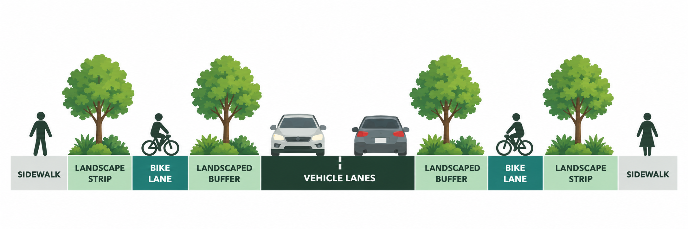

Mountain View Standard Details Update
Mountain View is updating the engineering standards that help determine how streets, sidewalks, bicycle facilities, landscaping, and other public improvements are designed.

- CIP
- Project 27-27 — Mountain View Standards Update
- Status
- In progress
- Public review
- Parks & Recreation Commission
B/PAC · Q2 2027
CTC - Funding
- $54,000 · Conveyance Tax
- Target
- Early 2028
Expected B/PAC review: Q2 2027 — per B/PAC’s FY 2026–27 work plan (a work-plan milestone, not a confirmed hearing date).
01
Why this matters
Standard Details are technical drawings and specifications the City uses when public improvements are designed and built -- not just pipes and utility connections, but street cross-sections, sidewalk configurations, driveway geometry, and visibility requirements. Plans and policies establish goals; Standard Details are where those goals turn into dimensions a project can actually be built to.
This update is one of the ways Mountain View can carry the Biodiversity and Urban Forest Plan, the Active Transportation Plan, Vision Zero, accessibility, and Complete Streets into repeatable engineering practice. (The Biodiversity and Urban Forest Plan doesn’t dictate specific street cross-sections; Council’s direction was that its concepts be considered in City projects going forward, and this update is one place that could show up.)
Vision Zero
The City’s Vision Zero Action Plan (adopted September 2024) includes SR-10: “Update City standard details to reflect Vision Zero best practices” (timeline 2026, Public Works). The action immediately before it, SR-9, calls for staff to “adopt NACTO, PROWAG and/or other best practice guidance to inform engineering judgment” (timeline 2025) — guidance that overlaps directly with the NACTO and PROWAG documents Project 27-27 staff have also identified.
Active Transportation Plan
The 2023 ATP Existing Conditions and Needs Summary reviewed the City’s Code and Standard Details as background work. It identifies Standard Details A-1 through A-9 as the typical street cross-sections used as a starting point for travel lanes, bicycle lanes, and sidewalks, and found that “the current standards do not reflect streets that support active transportation for all ages and abilities.”
02
What is being updated?
City staff provided additional detail on the project scope during the April 14, 2026 Council CIP study session.
CIP Project 27-27 — Standard Details Update
The City’s FY 2026–27 Capital Improvement Program includes CIP 27-27, Standard Details Update.
Key elements discussed on April 14
In some cases — green stormwater infrastructure, duck-outs — the update is expected to create new details rather than revise existing ones, since the current Standard Details don’t address those elements at all.
Guidance staff expects to draw on: NACTO · AASHTO · Caltrans · VTA · PROWAG
Nothing has been selected yet
These items describe what the update is expected to address — not what the revised standards will say. Over the past ten years, several adopted Precise Plans have already set their own streetscape standards that override the Standard Details for those areas; the update is focused on streets and areas not already covered by a Precise Plan.
Funding
$54,000 in Conveyance Tax funding is programmed for CIP 27-27 in the City’s FY 2026–27 Capital Improvement Program.
A separate $175,000 Council Work Plan item for Objective Design Standards is carried by the Community Development Department and is not part of this project.
03
Current standards: what do they look like?
Sheet A-4 shows a 70-foot street and 90-foot and 100-foot four-lane arterial configurations. Sheet A-5 shows a 110-foot four-lane arterial and the City’s widest configurations, 120-foot and 134-foot six-lane arterials. Some configurations label outside roadway space “BIKE/PARKING” — combined space usable for parking or bicycling. Sheet A-22 is a different kind of detail: rather than a street cross-section, it sets the Side Street/Driveway Pedestrian and Vehicular Triangle of Safety — sightline triangles that limit how tall landscaping, fences, and other objects can be near driveways and intersections. Click a drawing to view a larger image. Use the link below each image to see the full standard detail page.
A-4 — 4-Lane Arterial
A-5 — 6-Lane Arterial
A-22 — Side Street/Driveway Triangle of Safety
The same right-of-way can be allocated differently
The diagram below shows how a street with the same total right-of-way width can allocate space in different ways for travel lanes, bicycle facilities, sidewalks, and landscaping.

Conceptual only — not a proposed Mountain View design.
A street can have the same total right-of-way width but allocate that space very differently. City staff has said that in many instances, the existing right-of-way becomes a limiting factor, and the update is meant to help identify how to reallocate existing space for the various needs it has to serve.
What’s next?
The Standard Details Update (CIP 27-27) will review and update these and other details to better reflect the City’s current plans and priorities, including the Active Transportation Plan and the Biodiversity and Urban Forest Plan.
04
What to watch
These are the key design questions to follow as the Standard Details Update develops.
-
Protected bicycle facilities
Will the updated details support safe, continuous protected bikeways?
The current arterial standards include bicycle space, including some sections labeled “BIKE/PARKING,” but the Standard Details reviewed here don’t appear to include a dedicated modern protected-bikeway geometric detail — that doesn’t mean Mountain View has no protected bike lane standards; they exist today through Precise Plans and project-specific design.
-
Tree planting and landscape space
Will updated details better support trees, shade, and green infrastructure?
The current baseline, Standard Detail F-1, sets spacing rules for new street trees — a minimum of 10 feet from sanitary sewer laterals and 5 feet from water services and driveways — that directly affect how much usable planting space a landscape strip has.
-
Driveway design
How will driveway design affect safety and comfort?
A driveway is where vehicles cross the pedestrian path. Most driveway approaches slope the sidewalk down toward the street and back up; A-7A instead keeps the sidewalk level and slopes only the driveway apron below it — driveway design affects whether the pedestrian path stays level and continuous.
-
Green infrastructure
Will updated details make it easier to include stormwater features?
The current Standard Details don’t address green stormwater infrastructure at all — staff expects the update to create new details for this topic rather than revise existing ones.
-
Visibility and sight distance
How will intersections and driveways balance safety and sightlines?
A-22 and A-23 affect where landscaping, fences, and other objects can be placed near conflict points. Because the update specifically includes sightline/visibility standards, they’re useful details to watch as the project develops.
05
How standards connect to policy
The Standard Details don’t exist in isolation. They implement and are informed by the City’s plans, policies, and codes — including the Active Transportation Plan, the Biodiversity and Urban Forest Plan, and the Municipal Code.
How the pieces connect
City plans and goals
Set the vision and priorities (e.g., ATP, BUFP).
Policies and programs
Translate goals into direction (e.g., Complete Streets Policy).
Establishes requirements (e.g., Chapter 27).
Standard Details
Provide technical designs and specifications for implementation.
Projects on the ground
Use the standards to design and build streets, sidewalks, bike lanes, and more.
This shows one path through which street design gets regulated — City Code, adopted Precise Plans, and other design standards also shape individual projects. Standard Details are one important part of the rules and guidance that shape projects, not the only design authority.
“The standard for all streets in the city, including the designation of type, width, cross-section and design detail of each type of street, is as set forth in that certain document entitled ‘Standard Details for Streets and Sidewalks,’ heretofore approved by the city council, and which may be amended from time to time by resolution of the city council.”
— Mountain View Municipal Code §27.58, “Standard Details for Streets” adopted by reference
Open process question
How will the updated standards reflect the City’s current plans and priorities?
The update is an opportunity to better align the Standard Details with the Active Transportation Plan, the Biodiversity and Urban Forest Plan, and other City policies. It is not yet clear how this alignment will be done.
Rules and context
Explore the key codes, plans, and policies that relate to the Standard Details and how they fit together.
Street width + public improvements
Rules that require development to build, widen, or dedicate public streets.
Municipal Code · current
§27.60 — Filing of plans prerequisite to issuance of building permit
“No building permit shall be issued for construction of a building, structure or other improvement on a parcel of property, unless the owner of the property has executed an agreement with the city… to install the improvements required by this article.”
Why it matters: this is the operative hook: it’s what actually requires a property owner to build the street paving, curbs, gutters, and sidewalks described in §27.57 — to City standards — before a building permit is issued.
Municipal Code · current
§27.61 — Dedication of right-of-way
“Whenever the parcel of property for which a building permit is sought is not contiguous to a public street… which meets the standard right-of-way width specified in this article, the owner of such property shall execute an agreement for the dedication of the necessary property to provide the required right-of-way widths…”
Why it matters: this is how street widening actually happens in practice — development triggers dedication of land to reach the City’s standard right-of-way width, which the Standard Details then translate into a specific cross-section.
Sidewalks + frontage
Rules for sidewalks, curbs, gutters, and unimproved-street policy.
Municipal Code · current
§27.57 — Standard street improvements
“The standard improvements required for each of the streets in the city shall consist of street paving, concrete curbs, gutters and sidewalks… constructed and installed in accordance with the city standard specifications and design…”
Why it matters: this is the Code provision that actually requires sidewalks, curbs, and gutters to be built to City standards — the direct legal link between the Municipal Code and the Standard Details drawings.
Other City standard · 1993
The City’s Walking and Bicycling page identifies the “City of Mountain View Unimproved Streets Policy (1993)” by name. Adopted by City Council in 1993, it affirms that the City will not construct sidewalks in residential areas unless homeowners initiate and fund an assessment district — a mechanism described in the City’s 2023 ATP Existing Conditions Report, which reviewed the policy’s effect on the sidewalk network. (This page could not independently verify a standalone copy of the original 1993 policy document itself.)
Why it matters: explains why sidewalk continuity in Mountain View depends partly on resident-initiated funding rather than automatic City construction — many of the sidewalk network’s remaining gaps are in these unimproved areas.
Driveways + crossings
Rules for driveway geometry, curb ramps, and sight triangles.
Standard Design Criteria · 2002
§3.5 — Curb, Gutters, Sidewalk and Driveways
Key dimensions: commercial driveway width up to 35 feet (§3.5.1); curb-return radius minimum 30 feet (§3.5.2). The original 2002 Standard Design Criteria document could not be located online for this page — these figures are as characterized in the City’s 2023 ATP Existing Conditions and Needs Summary (Code Review), which identifies them by section number, not a verbatim quote of the 2002 document itself.
Why it matters: driveway width and curb-return radius affect the size of the vehicle crossing over the pedestrian path, and vehicle turning speed at that conflict point.
Caltrans standard · adopted by City
Mountain View has adopted Caltrans standards for curb ramps citywide — the City’s own Standard Details table of contents lists the former A-16/A-17 curb ramp details as superseded by “the latest Caltrans Standards.”
Why it matters: governs curb-ramp design at driveways and intersections. The 2023 ATP noted Caltrans’ standard ramps don’t include directional ramps, which help people with vision impairments orient into the crosswalk.
Project condition · example of application
Standard Detail A-22 — Side Street/Driveway Triangle of Safety
“The building architecture, landscaping, signage, and other aboveground improvements (including backflow preventers) shall conform to City Standard Detail A-22, Side Street/Driveway Pedestrian and Vehicular Triangle of Safety.”
— Condition of approval, Findings Report/Zoning Permit PL-2020-184 (773 Cuesta Drive), April 28, 2021.
Why it matters: this shows A-22 isn’t just a drawing sitting in a PDF — the City has actually required specific projects to build to it. This is one example of application, not a claim that identical wording applies automatically to every project.
Bicycle access
Rules for bicycle parking design and how many spaces are required.
Municipal Code · current
§36.32.85 — Bicycle parking facilities
“Convenient access to bicycle parking facilities shall be provided. Where access is via a sidewalk or pathway, curb ramps shall be installed where appropriate…”
Key details: 24-inch clearance from the centerline of each adjacent bicycle, 18 inches from walls or obstructions; a 5-foot access aisle to the front or rear of a standard 6-foot bicycle; Class I (long-term) facilities near employee entrances, Class II/III (short-term) near the main public entrance; paving and lighting (≥1 footcandle) required; design reviewed by the City for safety, security, and convenience.
Why it matters: this section primarily regulates bicycle parking associated with development, not on-street bikeway geometry — but it directly affects how bicycle access connects to sidewalks, curb ramps, paths, and building entrances.
Who administers this?
As of September 2026, these are the most relevant City contacts for the bicycle-parking provisions in Chapter 36 and the Bicycle Parking Guidelines. This is informational, not a definitive legal assignment of responsibility: Community Development is the responsible department context, and the Zoning Administrator has the specific review role §36.32.85 establishes.
Christian Murdock — Community Development Director. Community Development is the City department responsible for development and planning — Planning, Building, and Economic Vitality. §36.32.85 sits in the Zoning Ordinance the department administers and references Bicycle Parking Guidelines the department provides.
George Schroeder — Zoning Administrator. Administration of zoning/development review. §36.32.85 assigns the Zoning Administrator a role in determining bicycle-parking type, location, and design, and directs consideration of the Bicycle Parking Guidelines.
Community Development Department · 650-903-6306 · community.development@mountainview.gov
Staff assignments can change; see the City’s current Community Development directory for the latest contact information.
Municipal Code · current
§36.32.50 — Required number of parking spaces
“Each land use shall provide the minimum number of off-street parking spaces required by this section.”
Why it matters: its role here is determining the number of bicycle parking spaces required (a percentage of vehicle spaces) — it doesn’t set physical design standards; §36.32.85 does that.
Visibility + landscaping
Rules for street trees, landscaping, and corner sightlines.
Standard Detail · current baseline
Standard Detail F-1 — Tree Planting and Staking
“Trees shall be planted a minimum of 10’ from sanitary sewer laterals and 5’ from water services and driveways.”
Key details: 15-gallon nursery stock, minimum 6 feet tall, species determined by the City; root barrier required within 6 feet of a permanent structure; two stakes with rubber tree straps, driven 1 foot below the root ball.
Why it matters: these spacing rules directly affect where trees can physically fit within a landscape strip and near driveways — making tree placement relevant to street cross-sections, sight lines, and how much usable planting space a given block actually has. Species selection is determined by the City; the Standard Provisions reviewed for this page do not describe a separate published tree list or arborist sign-off step for new street trees.
Municipal Code · current
§36.34.10(m) — Corner treatment standard
“Mountain View City Code Chapter 36 Zoning, Sec. 36.34.10(m), Corner Treatment Standard for Landscaping and Fencing”
As cited directly on Standard Detail A-23, Corner/Intersection Visibility.
Why it matters: sets height limits for landscaping, fences, and hedges near street corners so drivers and pedestrians can see each other — the zoning-code basis for the sight-triangle geometry shown in A-23.
About these sources
This is not an exhaustive index of every provision affecting street design — only the ones identified as directly relevant to walking, bicycling, and street geometry through the source material reviewed for this page (Municipal Code Chapter 27 Article V and Chapter 36 Zoning, the 2002 Standard Design Criteria as characterized by the City’s 2023 ATP Code Review, and the City’s Standard Provisions and Standard Details). Municipal Code links point to the Code’s landing page — Municode’s search is required to reach a specific section, since a stable per-section deep link could not be verified for this page. Wording quoted from §36.32.85 and §36.32.50 was additionally cross-checked against a 2015 City-published excerpt of the Code and an independent Municode mirror.
06
How the review will work
In response to Question 6 of the Council Questions for the April 14, 2026 City Council CIP Study Session, staff described how this update differs from the City’s past practice for revising standard details.
“Staff’s past practice for updating standard details has been to revise and publish details as needed, using their expertise. Recognizing that some standard details identify important streetscape elements and that stakeholders and the community are interested in these details, staff will conduct outreach on the standard details related to streetscape.”
— City of Mountain View, Council Questions, Question 6, April 14, 2026
Review process
Staff outlined a more robust process for this update, which includes community and advisory review.
Technical work
Research, analysis, and draft updates to the Standard Details.
Staff reviews feedback
City staff will consider input from the community and advisory bodies and refine the draft details.
Revisions / new details
Staff incorporates feedback, revises the Standard Details, and develops new details as needed.
Publish updated details
Updated Standard Details are published following the review process.
Review bodies: PRC — Parks & Recreation Commission B/PAC — Bicycle/Pedestrian Advisory Committee CTC — Council Transportation Committee
B/PAC work plan milestone
Expected review timeline
B/PAC’s FY 2026–27 Work Plan lists “Updated City Standard Details” with a target of Q2 2027 — an expected review period, not a confirmed hearing date.
The public will be able to provide feedback at these meetings. Staff has said it will work with stakeholders and the City’s Communications Department to provide notice. Because this is a more robust process than the City’s past practice, staff expects completion in early 2028.
07
Project timeline
The Standard Details Update is currently in progress. Technical work is happening now, followed by public and commission review, with completion expected in early 2028.
Current phase
Technical work is underway in 2026, including research, analysis, and draft details.
Project initiated
FY 2026–27
Technical work and draft details
2026–early 2027
Public and commission review
Q2 2027
Finalize and adopt
Late 2027
Implementation
Early 2028
Project initiated
CIP Project 27-27 was approved, and work on the Standard Details Update began.
Technical work and draft details
Research, analysis, and draft updates to the Standard Details are underway.
Public and commission review
Draft updates are expected to be reviewed by the Parks & Recreation Commission, Bicycle/Pedestrian Advisory Committee, and Council Transportation Committee, per B/PAC’s FY 2026–27 work plan.
Work-plan milestone — not a confirmed hearing date
Finalize and adopt
Incorporate feedback, finalize the updated Standard Details, and bring them forward for adoption.
Implementation
Updated details will be used in City projects (e.g., streets, sidewalks, bike lanes, landscaping, green infrastructure).
08
Sources & original documents
Primary City documents and other source material used to document the Standard Details Update and its policy context.
Project + review
FY 2026–27 Capital Improvement Program — Study Session
City Council Questions — Question 6: Objective Design Standards
Staff response describing the scope and public-review process for the streetscape-related Standard Details update.
Draft FY 2026–27 Work Plan and Tentative Agenda List
“Updated City Standard Details” — Q2 2027 (expected review period, not a confirmed hearing date).
City standards + code
Standard Provisions and Standard Details
Mountain View Municipal Code — Chapters 27 & 36
Links to the Code homepage — Municode’s search/navigation is required to reach any specific section directly; a stable per-section deep link could not be verified for this page. Bicycle-parking wording (§36.32.85, §36.32.50) was cross-checked against a 2015 City-published excerpt of the Code and an independent Municode mirror.
Findings Report/Zoning Permit PL-2020-184 (773 Cuesta Drive)
Policy + design guidance
ATP Existing Conditions and Needs Summary
Identifies Standard Details A-1 through A-9 as typical street cross-sections and finds a mismatch with all-ages-and-abilities active transportation goals.
Vision Zero Action Plan / Local Road Safety Plan
SR-9 (adopt NACTO/PROWAG guidance) and SR-10 (update City standard details to reflect Vision Zero best practices).
Caltrans Standard Plans — curb ramps